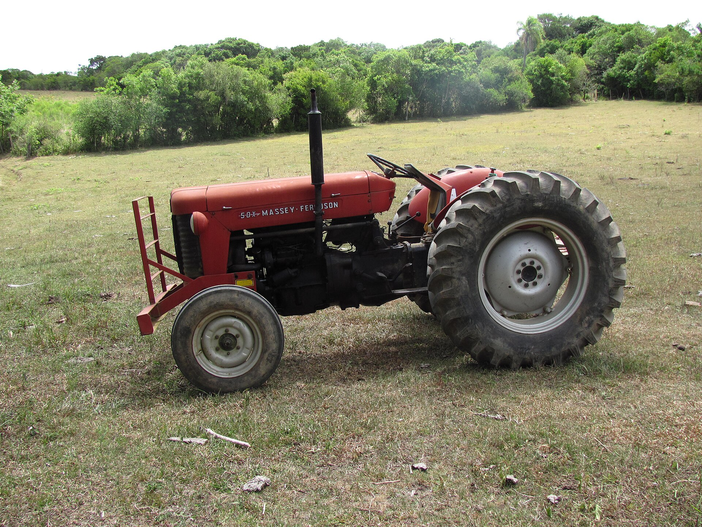
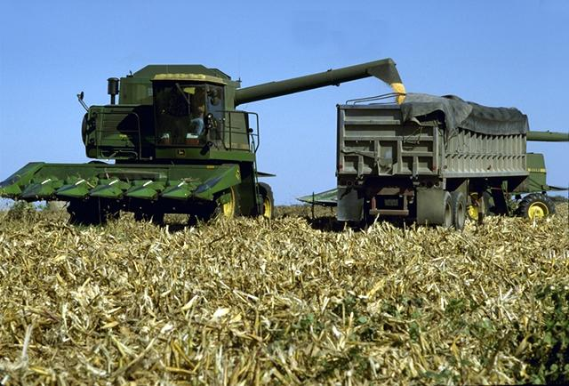

A propriedade
como empresa

 produzirnaobasta.com.br
produzirnaobasta.com.brNo fim do ano, a propriedade deu lucro, ou foi a família que segurou a conta?
Empresa, e modo de vida
Empresa
Gera receita, consome custo e produz resultado.
Modo de vida
A terra que a família trabalha e o ofício que se herda.
Por que o campo não é fábrica
- Safra: o dinheiro sai o ano todo e entra de uma vez
- Clima: seca, geada e granizo fogem do controle
- Seres vivos: adoecem, sofrem pragas, estragam
- Preço: não define o que vende nem o que compra
- Tempo: na cria e no pomar, anos entre decidir e receber

Um sistema, não um amontoado
A família, seus objetivos, a terra, as lavouras e os animais funcionam juntos.
Grãos no verão, boi no inverno
sementes, terneiros, adubo, calcário, crédito
grãos para a cooperativa, boi para o frigorífico
↺ o esterco do gado e das aves volta como adubo da lavoura
Quem decide é gente
Dois vizinhos, mesmo solo, mesmo clima, decisões diferentes. Por quê?
Os objetivos da família estão no centro, não só o lucro.
Muitos preferem segurança a rentabilidade máxima.

Uma carteira só
"O leite não dá nada. No fim do mês não sobra um real."
- O leite não sobra? Mexer na atividade.
- O leite sobra, e a casa gasta mais? Mexer nos gastos da casa.
Duas caixas
A propriedade paga a produção e, do que sobra, paga a família.
Três costumes
- Caderno de duas colunas: produção de um lado, casa do outro
- Retirada definida: um valor por mês, como um salário
- Conta só da propriedade: o extrato vira registro
Autoconsumo: o leite da mesa tem valor
O leite, a carne do animal carneado, a lenha, a horta. Ninguém pagou, mas a família compraria se não produzisse.
Aporte: dinheiro de fora não é receita
A aposentadoria que paga o adubo. O salário do filho que ajuda a comprar a novilha.
A aposentadoria rural sustenta muitas propriedades no RS. Não há problema nisso: o importante é saber que ela está ajudando.
Casa ou propriedade?
| Adubo do milho | propriedade |
| Rancho do mês | casa |
| Vacina das terneiras | propriedade |
| Transporte escolar | casa |
| Leite que a família toma | casa · autoconsumo |
| Aposentadoria que paga o adubo | casa · aporte |
| Luz: um relógio para casa e galpão | as duas · dividir pelo uso |
Separando as caixas
| Vendas do leite | R$ 18.000 |
| Gastos da produção | − R$ 12.500 |
| Sobra da produção | R$ 5.500 |
| Gastos da casa | R$ 7.500 |
| Aposentadoria | − R$ 1.500 |
| Casa precisa tirar | R$ 6.000 |
O leite sobra. A casa precisa de mais do que essa sobra.
A diferença sai de algum lugar: uma dívida, a venda de um bem, a manutenção adiada.
O que a propriedade tem
- O que tem, se gasta: trator, ordenha e galpão perdem valor
- O que tem, poderia render: aplicado, ou a terra arrendada
Gestão é um ciclo
Quem pula o anotar fica sem ter o que avaliar.
E o próximo plano volta a ser no chute.
Onde a família quer chegar?
pagar uma dívida, trocar o trator
a faculdade de um filho, ampliar o rebanho
passar a propriedade adiante, trabalhar menos
Sem saber para onde ir, qualquer resultado parece bom ou ruim por acaso.
Referências
KAY, R. D.; EDWARDS, W. M.; DUFFY, P. A. Gestão de propriedades rurais. 7. ed. Porto Alegre: AMGH, 2014.
MIGUEL, L. A. et al. Fundamentos para o estudo das unidades de produção agrícola. In: MIGUEL; SCHREINER (org.). Gestão e planejamento de unidades de produção agrícola. 2. ed. Porto Alegre: Ed. da UFRGS, 2022.
OLIVEIRA, R. M. Gestão da Propriedade Rural, módulo 1: a propriedade como negócio. Produzir Não Basta, 2026. produzirnaobasta.com.br/produtor
Fotos: trator, Paulo rsmenezes (CC BY-SA 3.0 BR) · colheita de milho, USDA (domínio público) · parreiral, Daniel Isaia/Agência Brasil (CC BY 3.0 BR).
Material elaborado pelo Prof. Róberson Macedo de Oliveira (Colégio Politécnico da UFSM), com apoio de IA (Claude, Anthropic) na organização didática e na diagramação; conteúdo, seleção e decisões de ensino são do docente.